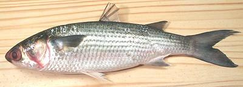

Gray Mullet

[Flathead Mullet, Striped Mullet, Black Mullet; Aguas, Banak, Gisaw
(Philippine); Manla, Kasmeen, Boita, Tirutha, Bhoita, Ain (India);
Mugil cephalus]
Found world wide in tropical and subtropical coastal waters, estuaries,
and even rivers, these fish are mainly vegetarians, and thus are prey
for just about everything else. They can grow to 47 inches and 26 pounds
but the photo specimen was 15-1/2 inches, weighing 1 pound 6-1/2 ounces.
Very tiny "baby mullet" are also sometimes found in the fish markets.
Mullet are caught wild and farmed, and are not considered threatened.
They are not often seen in North American markets except along the
Southeast Coast and in Asian fish markets in Southern California, but
are a very important commercial fish in many parts of the world. It is
a good medium flavor eating fish - look for it in Philippine and
Southeast Asian fish markets.
More on Varieties of Fish
(very large page).
General:
Gray Mullet has medium colored flesh and
good medium flavor, a bit stronger skin-on. There is a wide but thin
region of darker meat under the skin, and a deep dark band at the
centerline. The dark meat is part of the flavor of the fish because
there is too much of it to remove. Mullet should be purchased as fresh
as possible and eaten or frozen the same day.
Cooking:
Because of its broad head, mullet is most
suitable for use as fillets, or "pan dressed" for baking or steaming.
The flesh is soft and beaks apart randomly rather than in orderly flakes,
and isn't firm enough to use in soups or stews. It is too tender to lift
a whole fillet from a baked or steamed fish. For baking or steaming,
cut a few diagonal slashes through the skin so it doesn't tear the
flesh.
Fillets are good for pan frying and you can fry fillets skin-on,
producing a nice crisp skin. Dust both sides with salted rice flour and
fry the inside first, then flip skin side down. Hold the fillet down
with your turner for a few seconds until the skin relaxes.
IF you are new to dealing with whole fish, see our
Cleaning and Filleting Round Fish page.
Scales:
Gray Mullet is covered with very large strong
scales that take a bit of energy to scrape off, and they fly around a
lot.
Cleaning:
Nothing unusual here except the body cavity
is large and can be filled with really yucky stuff, and there may be
two large pouch of roe. The gills pull out fairly easily, but are not
easy to get at. This is not really a problem since you will probably
not be using the head, as this is not a good fish for stock.
Roe:
 In the autumn, mullet may be carrying two pouches of roe. This may be
"Yellow Roe" (eggs) or "White Roe" (sperm). You will not be finding
fish with yellow roe at your fish market, as it is quite valuable.
Fish containing it will be factory cleaned, with the roe immediately
shipped to Italy or Asia.
In the autumn, mullet may be carrying two pouches of roe. This may be
"Yellow Roe" (eggs) or "White Roe" (sperm). You will not be finding
fish with yellow roe at your fish market, as it is quite valuable.
Fish containing it will be factory cleaned, with the roe immediately
shipped to Italy or Asia.
The white roe is of little value, but is consumed locally. It is
usually seasoned, dusted with flour and pan fried, then eaten with a
squeeze of lemon. It may also be made into patties with eggs and
scallions. The photo to the left shows White Roe from two 2 pound
fish. These pouches were about 7-1/2 inches long and weighed about
3 ounces per fish.
Durring "mullet runs" in Florida, asshole opportunists join the
fishing. They check the fish for roe, and thousands of white roe fish
are tossed overboard dead. This is unacceptable behavior.
Fillets:
This fish fillets quite easily, but treat it
gently as the flesh is soft. When you get to the rib cage, cut the ribs
from the backbone with kitchen shears and then pull them from the fillet
with your long nose pliers - they are large, few, and pull easily. There
are also a few centerline pin bones that are a lot larger than pins, but
they are easy to find and pull. Once you have pulled the ribs, you can
easily peel off the black lining of the body cavity with your long nose
pliers.
Yield:
A 1 pound 6-1/2 ounce fish yielded 9-5/8 oz of
skin-on fillet (43%) and 8-1/4 oz of skinless fillet (37%). Results
with a couple of 2 pound fish were quite similar, but skin-off yield
was just a little higher. Yield is moderate due to the fish's heavy
head.
Skin:
The skin has a flavor just a bit stronger than
the flesh. It has very moderate shrinkage in cooking, and quickly
relaxes. It can sometimes be peeled off by hand but the usual long knife
and cutting board
Method works well. For smaller
fish, You may lose most of the belly when skinning, but there really
won't be much there to lose.
Stock:
Heads, bones and fins, simmered for about
40 minutes, make a murky, oily, medium flavored stock that isn't one
of my favorites.
sf_mullfhz 060704 rev 090831 - www.clovegarden.com
©Andrew Grygus - agryg@clovegaden.com - Photos on this
page not otherwise credited are © cg1 -
Linking to and non-commercial use of this page permitted